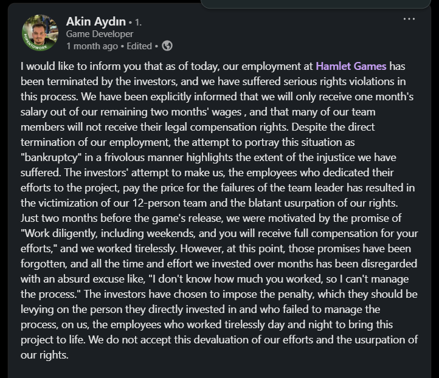
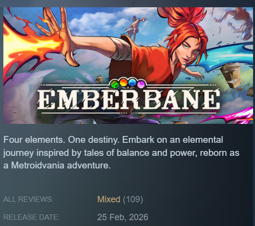
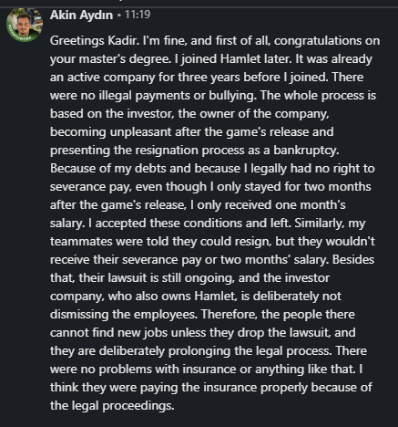

Unfair Work Culture in Turkish Indie Games
Student Name: Kadir Cem Yılmaz
Student ID: 65704
University: VIZJA University, Warsaw
Department: New Media and Public Relations
Course: Investigative Journalism
Date: 14.06.2026
Working at a game studio usually sounds cool. But once you get into it, the reality is often quite different. From the biggest game studios to the most indie ones, everyone has complaints about the work environment. The insufficient legal protections make this situation far from ideal for the Turkish gaming industry as well. In particular, a post published on LinkedIn by an employee who was fired in recent months clearly lays out the problems: crunch culture, violations of labor rights, unsafe working conditions, and many other issues. This study will highlight the problems experienced by Akın and his colleagues and try to address them from a wide perspective.
The final stages of game development are characterized by high pressure and long working hours across the industry. This concept, called “crunch” in the literature, means periods of extreme overtime, usually without pay, used to speed up delayed projects.1 Even after all the serious physical and mental damage it causes to employees, crunch remains a normalized practice in the video game industry. 2Developers' professional loyalty to projects and their love for games have become an integral part of the industry, leading to their abuse by managers and setting the stage for “passion exploitation.”3 While the “crunch” may be one of the most visible crises in the industry, the intentional abuse of legal processes and the devaluation of labor are just as problematic for game workers as crunch. This report analyzes business ethics violations and the impact of crunch on employee rights in Turkey’s independent (indie) game market, using the Hamlet Games case as a case study. The crunch issues and legal violations involved in this case will be examined from the perspectives of those directly affected and legal experts.

Hamlet Games is an independent game studio that has been developing computer games for the past three years. As confirmed in Screenshot 1, the 12-person development team at Hamlet Games was suddenly terminated by investors as of May 2026. According to Screenshot 1, Two months before the launch, the team was motivated by management’s promise that “Work hard, including on weekends, and you will be fully rewarded for your efforts”; they were made to work without breaks and even had their weekend time off taken away. Then of all, the team has completed the project's development process, and the game has been released.


As indicated in Screenshot 2, for the two months following the game’s release, the team continued to work at the company and put in long hours. To understand the working conditions, Akın was specifically asked if the team had been subjected to systematic mobbing, psychological harassment or unlawful payment practices (such as working without insurance or receiving cash-in-hand payments) during the game’s active development phase. As Akın noted in Screenshot 2, no issues related to insurance or payments were encountered during the production phase, and he did not observe any mobbing before the game’s release. However, Screenshot 2 reveals that at the end of those two months, company management and investors suddenly announced that they had gone bankrupt (without any legally finalized official proceedings) and stated that they were shutting down operations. At the heart of this strategy lies a strategy to avoid the financial obligations associated with workers' rights; after all, when employees are officially fired by the company, they are entitled to legal compensation payments. Some employees, such as Akın Aydın, were forced to accept these imposed conditions and give up their legal rights to compensation, leaving them with no choice but to quit. Other employees who rejected this offer, refused to quit, and fully claimed their legal rights by filing a lawsuit have been left in legal limbo because their official exit papers have not been issued.
One of the worst aspects of the Hamlet Games case is the legal limbo4 in which employees who refuse to quit are trapped. Investors who refuse to issue official termination papers to employees who have filed lawsuits are employing a tactic of deliberate harassment. To understand the legal aspects of this strategy and the legal framework in Turkey, the expert opinion of a labor law attorney was requested as part of this study.
As noted in Screenshot 3, while employees will receive what they are deserved at the end of the day, recovering those funds is a challenging process: “If the case is filed in Turkey and the entire local court process takes about two years, and when you add the appeals process—which also takes about two years—recovering all their funds could take a total of four years. Investors are effectively turning this four-year timeline into a weapon, financially starving developers and forcing them to give up.
According to Screenshot 3, in a real and formal bankruptcy proceeding, the company’s assets are sold to pay off its debts; however, “since employee claims take priority, employees’ unpaid wages and damages will be paid first.” Because a formal declaration of bankruptcy would force investors to prioritize employee payments, investors are using the threat of bankruptcy not to legally trigger the bankruptcy process, but only as a pressure tactic to force developers to quit and surrender their legal rights.
From the moment a developer enters the Turkish gaming industry, they are subjected to systematic undermining of their labor. As a game developer, based on my own observations and experiences, I can say that for many companies in Turkey, employee satisfaction or sustainable project management is rarely a priority. Instead, the primary goal is to minimize labor costs as much as possible and to squeeze employees financially in order to extract the maximum sacrifice from them. This exploitative system often targets newcomers to the industry. It is a common practice to make entry-level developers work under the cover of “internships” or “volunteer work” without paying them a single money.5 Employers are trapping workers in their systems by purposely dragging out these free or extremely low-cost processes as long as possible in order to avoid financial obligations. In my own career, I experienced this situation personally while working at a firm in Istanbul. I was hired on a volunteer basis at first, and after that period, I worked for a monthly salary of around 100 euros. This situation reflects a common form of exploitation from an employer’s perspective, where the aim is to trap the employee in a cycle of low-wage labor.
The Hamlet Games case is a stark reflection of the “exploitation of passion” and the unregulated, unfair work culture within Turkey’s independent gaming industry. From unpaid internships to systematic “crunch” periods and silent bullying, industry practices heavily disadvantage employees. This cycle of exploitation will continue until developers fully realize their legal rights and build stronger unity across the industry.
I would like to thank my colleague Akın Aydın, who contributed to this study by speaking openly about the challenges he has faced, as well as lawyer Umut Yaşar Özkan for his valuable insights into the legal aspects of this topic during the preparation of this study.